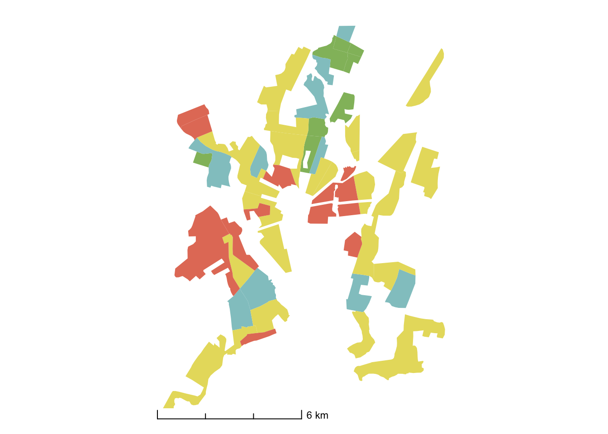
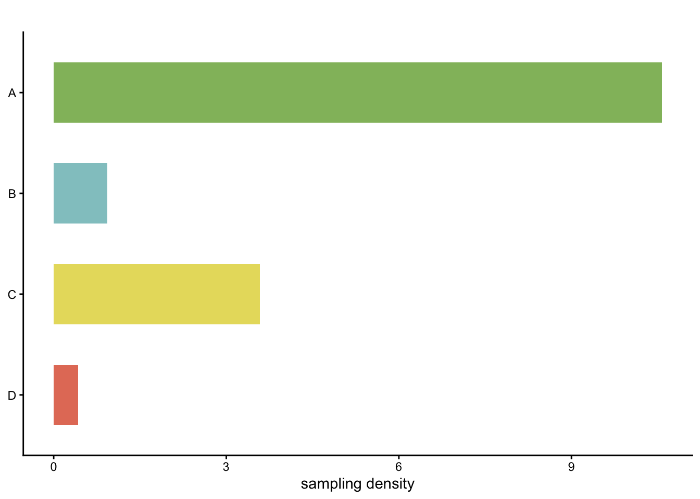
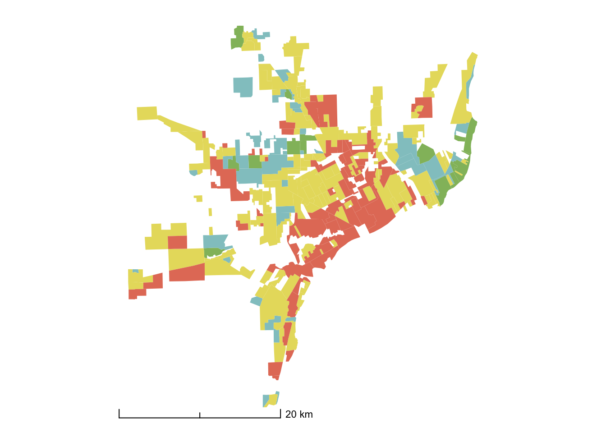
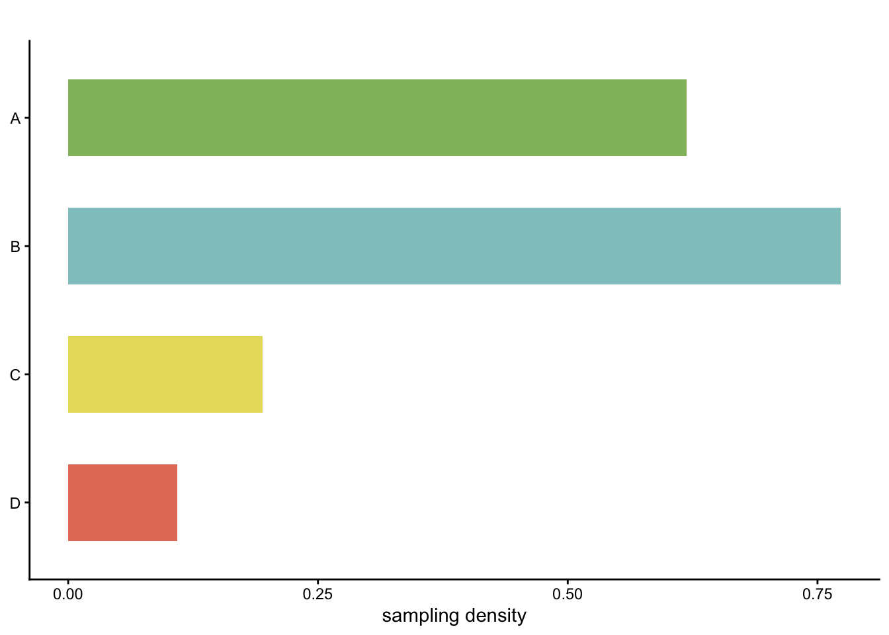
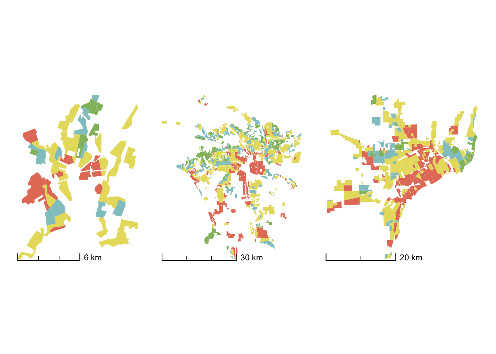
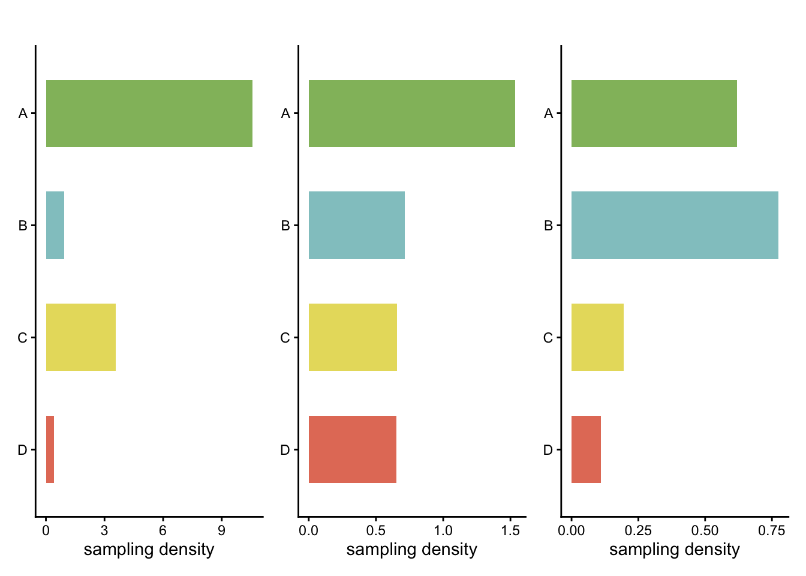

library(sf)Linking to GEOS 3.13.0, GDAL 3.8.5, PROJ 9.5.1; sf_use_s2() is TRUElibrary(tidyverse)Warning: package 'ggplot2' was built under R version 4.4.3── Attaching core tidyverse packages ──────────────────────── tidyverse 2.0.0 ──
✔ dplyr 1.1.4 ✔ readr 2.1.5
✔ forcats 1.0.1 ✔ stringr 1.6.0
✔ ggplot2 4.0.1 ✔ tibble 3.3.0
✔ lubridate 1.9.4 ✔ tidyr 1.3.1
✔ purrr 1.2.0 ── Conflicts ────────────────────────────────────────── tidyverse_conflicts() ──
✖ dplyr::filter() masks stats::filter()
✖ dplyr::lag() masks stats::lag()
ℹ Use the conflicted package (<http://conflicted.r-lib.org/>) to force all conflicts to become errorslibrary(mapdata)Loading required package: maps
Attaching package: 'maps'
The following object is masked from 'package:purrr':
maplibrary(ggthemes)
library(ggspatial)
library(usmap)
library(dplyr)
library(ggpubr)
require(tidycensus)Loading required package: tidycensusrequire(patchwork)Loading required package: patchwork# the link we used changed but we share this data, this is the updated one..https://dsl.richmond.edu/panorama/redlining/static/mappinginequality.json")
gpkg_url <- "/vsicurl/https://dsl.richmond.edu/panorama/redlining/static/mappinginequality.json"
holc_new <- st_read(
gpkg_url,
layer = "mappinginequality",
quiet = TRUE
) |>
dplyr::rename(holc_grade =grade) |>
dplyr::mutate(city_state = paste(city, state, sep = ", "))
holc_new = holc_new |>
dplyr::mutate(valid =st_is_valid(holc_new)) %>%
dplyr::filter(valid=="TRUE") %>%
dplyr::filter(!is.na(holc_grade) & holc_grade != 'E') %>%
sf::st_cast('POLYGON') %>% # IMPORTANT
dplyr::filter(!st_is_empty(.)) %>%
sf::st_make_valid(.) %>%
tibble::rowid_to_column()Warning in st_cast.sf(., "POLYGON"): repeating attributes for all
sub-geometries for which they may not be constant# date_stamp <- format(Sys.Date(), "%Y-%m-%d")
# st_write(
# holc_new,
# paste0("../outdir/holc_new_", date_stamp, ".gpkg"),
# layer = "holc_new",
# delete_layer = TRUE
# )
# US <- st_read("../../indir/gadm40_USA_shp/") # Can also be red directly
US <- st_read(
"/vsizip//vsicurl/https://geodata.ucdavis.edu/gadm/gadm4.0/shp/gadm40_USA_shp.zip",
layer = "gadm40_USA_1",
quiet = TRUE
)
US <- st_simplify(US, preserveTopology = TRUE, dTolerance = 1000)
US <- US %>% st_crop(xmin = -130, ymin = 22, xmax = -65, ymax = 55) Warning: attribute variables are assumed to be spatially constant throughout
all geometriesholc_pal <- c('#92BC6B' # green
, '#92C7C9' # blue
, '#E7DC6B' # yellow
, '#E47D67' # red
#, '#A9A9A9'
)
# Keep only cities used in our analysis:
comp = read.csv('../../indir/Biodiv_Greeness_Social/main_combined_2022-05-27.csv')
# If city_state does not already exist, create it
points <- holc_new %>%
inner_join(comp %>% distinct(city, state), by = c("city", "state")) %>%
st_centroid()Warning: st_centroid assumes attributes are constant over geometriessampling <- read_csv("../../indir/Biodiv_Greeness_Social/main_combined_2022-05-27.csv") %>%
select(city, holc_grade, records, area_holc_km2) %>%
group_by(city, holc_grade) %>%
summarise(area_holc_km2 = sum(area_holc_km2, na.rm = TRUE),
records = sum(records, na.rm = TRUE)) %>% ungroup() %>%
mutate(density = records/area_holc_km2)Rows: 9851 Columns: 32
── Column specification ────────────────────────────────────────────────────────
Delimiter: ","
chr (7): id, state, city, holc_id, holc_grade, city_state, msa_NAME
dbl (25): area_holc_km2, holc_tot_pop, msa_GEOID, msa_M, msa_p, msa_H, msa_e...
ℹ Use `spec()` to retrieve the full column specification for this data.
ℹ Specify the column types or set `show_col_types = FALSE` to quiet this message.
`summarise()` has grouped output by 'city'. You can override using the `.groups` argument.map_usa = ggplot() +
geom_sf(data = US,aes(geometry = geometry), lwd = 0.2) +
geom_sf(data = points, aes(geometry = geometry), color = '#92BC6B', size = 4, lwd = 0) +
geom_sf(data = points, aes(geometry = geometry),color = '#92C7C9', size = 3, lwd = 0) +
geom_sf(data = points, aes(geometry = geometry), color = '#E7DC6B', size = 2, lwd = 0) +
geom_sf(data = points, aes(geometry = geometry), color = '#E47D67', size = 1, lwd = 0) +
# geom_sf_label(data = points, aes(label = city), force = 100, nudge_x = -2, seed = 10) +
theme_minimal() +
coord_sf(crs = st_crs(2163), xlim = c(-2500000, 2500000), ylim = c(-2300000,
730000))+ theme_minimal() +
#geom_polygon(color = "white") +
# guides(fill=FALSE) +
theme(axis.title.x=element_blank(), axis.text.x=element_blank(), axis.ticks.x=element_blank(),
axis.title.y=element_blank(), axis.text.y=element_blank(), axis.ticks.y=element_blank()) +
theme(
#panel.background = element_blank(),
panel.grid.major = element_blank(),
panel.grid.minor = element_blank(),
axis.line = element_line(colour = "black"),
panel.border = element_rect(colour = "black", fill=NA, size=1)
)Warning in CPL_crs_from_input(x): GDAL Message 1: CRS EPSG:2163 is deprecated.
Its non-deprecated replacement EPSG:9311 will be used instead. To use the
original CRS, set the OSR_USE_NON_DEPRECATED configuration option to NO.Warning: The `size` argument of `element_rect()` is deprecated as of ggplot2 3.4.0.
ℹ Please use the `linewidth` argument instead.map_usa
# ggsave("../../outdir/map.png",height =4, width=7.5, dpi = 300)
NH <- holc_new %>% filter(city == "New Haven")
st_bbox(NH) xmin ymin xmax ymax
-72.99321 41.23109 -72.85227 41.37502 NH_map <- holc_new %>% filter(city == "New Haven") %>%
mutate(area = st_area(geometry)) %>%
st_crop(xmin = -73.3, ymin = 41.23109, xmax = -72.5, ymax = 41.37502) %>%
ggplot() + geom_sf(aes(fill = holc_grade), lwd = 0) + theme_minimal() +
theme(legend.position = "none",
axis.text = element_blank(),
axis.ticks = element_blank(),
panel.grid = element_blank()) +
scale_fill_manual(values= holc_pal) + #c("green4","dodgerblue3", "gold1", "firebrick4")) +
theme(plot.title = element_text(size = 12)) +
annotation_scale(style = "ticks", location = "bl", width_hint = 0.5, vjust = -10)Warning: attribute variables are assumed to be spatially constant throughout
all geometriesWarning in annotation_scale(style = "ticks", location = "bl", width_hint = 0.5,
: Ignoring unknown parameters: `vjust`NH_density <- sampling %>%
filter(city == "New Haven") %>%
ggplot() + geom_col(aes(x = fct_rev(holc_grade),y = density/1000, fill = holc_grade), width = 0.6) +
# coord_flip() +
theme_classic() +
scale_fill_manual(values=holc_pal) +
labs(y = "sampling density") + theme(legend.position = "none", axis.title.y = element_blank()) +
coord_flip() + labs(title = "")+
scale_y_continuous(breaks = c(0, 3, 6, 9))
NH_map
# ggsave("../../outdir/nh_map.pdf",height =2, width=1.3, dpi = 300)
NH_density
# ggsave("../../outdir/nh_dens.png",height =2, width=1.3, dpi = 300)
LA <- holc_new %>% filter(city == "Los Angeles")
st_bbox(LA) xmin ymin xmax ymax
-118.61036 33.70563 -117.70285 34.30388 LA_map <- holc_new %>% filter(city == "Los Angeles") %>%
mutate(area = st_area(geometry)) %>%
st_crop(xmin = -118.61036, ymin = 28, xmax = -118, ymax = 34.35388) %>%
ggplot() + geom_sf(aes(fill = holc_grade), lwd = 0) + theme_minimal() +
theme(legend.position = "none",
axis.text = element_blank(),
axis.ticks = element_blank(),
panel.grid = element_blank()) +
scale_fill_manual(values=holc_pal) +
theme(plot.title = element_text(size = 12)) +
annotation_scale(style = "ticks", location = "bl", width_hint = 0.5, vjust = -10)Warning: attribute variables are assumed to be spatially constant throughout
all geometries
Warning: Ignoring unknown parameters: `vjust`LA_density <- sampling %>%
filter(city == "Los Angeles") %>%
ggplot() + geom_col(aes(x = fct_rev(holc_grade),y = density/1000, fill = holc_grade), lwd = 0, width = 0.6) +
# coord_flip() +
theme_classic() +
scale_fill_manual(values=holc_pal) +
labs(y = "sampling density") + theme(legend.position = "none", axis.title.y = element_blank()) +
coord_flip() +labs(title = "")
LA_map
# ggsave("../../outdir/LA_map.png",height =2, width=1.3,dpi = 300)
LA_density
# ggsave("../../outdir/LA_density.png",height =2, width=1.3, dpi = 300)
detroit_map <- holc_new %>% filter(city == "Detroit") %>%
mutate(area = st_area(geometry)) %>%
ggplot() + geom_sf(aes(fill = holc_grade), lwd = 0) + theme_minimal() +
theme(legend.position = "none",
axis.text = element_blank(),
axis.ticks = element_blank(),
panel.grid = element_blank()) +
scale_fill_manual(values=holc_pal) + theme(plot.title = element_text(size = 12)) +
annotation_scale(style = "ticks", location = "bl", width_hint = 0.5, vjust = -10)Warning in annotation_scale(style = "ticks", location = "bl", width_hint = 0.5,
: Ignoring unknown parameters: `vjust`detroit_density <- sampling %>%
filter(city == "Detroit") %>%
ggplot() + geom_col(aes(x = fct_rev(holc_grade),y = density/1000, fill = holc_grade), lwd = 0, width = 0.6) +
# coord_flip() +
theme_classic() +
scale_fill_manual(values=holc_pal) +
labs(y = "sampling density") + theme(legend.position = "none", axis.title.y = element_blank()) +coord_flip() +
labs(title = "") +
scale_y_continuous(breaks = c(0, 0.25, 0.5, 0.75))
detroit_map
# ggsave("../../outdir/detroit_map.pdf",height =2, width=1.3, dpi = 300)
detroit_density
# ggsave("../../outdir/detroit_dens.png",height =2, width=1.3, dpi = 300)
# NH_density <- NH_density +
# coord_fixed(ratio = 0.25)
#
# LA_density <- LA_density +
# coord_fixed(ratio = 0.25)
#
# detroit_density <- detroit_density +
# coord_fixed(ratio = 0.25)
# NH_map <- NH_map +
# coord_equal() +
# theme(aspect.ratio = NULL)
#
# LA_map <- LA_map +
# coord_equal() +
# theme(aspect.ratio = NULL)
#
# detroit_map <- detroit_map +
# coord_equal() +
# theme(aspect.ratio = NULL)
#
row_NH <- (NH_map | NH_density) + plot_layout(widths = c(1, 1))
row_LA <- (LA_map | LA_density) + plot_layout(widths = c(1, 1))
row_detroit <- (detroit_map | detroit_density) + plot_layout(widths = c(1, 1))
NH_map | LA_map | detroit_map
NH_density | LA_density | detroit_density
#
#
# options(repr.plot.width = 14, repr.plot.height = 14)
# Combine: USA map on top, then 3 rows beneath
fig1 <- map_usa /
row_NH /
row_LA /
row_detroit +
plot_layout(heights = c(4, 1, 1, 1))
fig1
ggsave(
"../../outdir/Figure_1_Map_Replic_HOLC_NHB.png",
fig1,
width = 12,
height = 12,
dpi = 300
)
sessionInfo()R version 4.4.1 (2024-06-14)
Platform: aarch64-apple-darwin20
Running under: macOS Sonoma 14.6
Matrix products: default
BLAS: /Library/Frameworks/R.framework/Versions/4.4-arm64/Resources/lib/libRblas.0.dylib
LAPACK: /Library/Frameworks/R.framework/Versions/4.4-arm64/Resources/lib/libRlapack.dylib; LAPACK version 3.12.0
locale:
[1] en_US.UTF-8/en_US.UTF-8/en_US.UTF-8/C/en_US.UTF-8/en_US.UTF-8
time zone: America/Los_Angeles
tzcode source: internal
attached base packages:
[1] stats graphics grDevices utils datasets methods base
other attached packages:
[1] patchwork_1.3.0 tidycensus_1.7.1 ggpubr_0.6.0 usmap_0.7.1
[5] ggspatial_1.1.9 ggthemes_5.1.0 mapdata_2.3.1 maps_3.4.3
[9] lubridate_1.9.4 forcats_1.0.1 stringr_1.6.0 dplyr_1.1.4
[13] purrr_1.2.0 readr_2.1.5 tidyr_1.3.1 tibble_3.3.0
[17] ggplot2_4.0.1 tidyverse_2.0.0 sf_1.0-21
loaded via a namespace (and not attached):
[1] tidyselect_1.2.1 farver_2.1.2 S7_0.2.1 fastmap_1.2.0
[5] promises_1.3.3 digest_0.6.37 timechange_0.3.0 lifecycle_1.0.4
[9] processx_3.8.6 magrittr_2.0.4 compiler_4.4.1 rlang_1.1.6
[13] tools_4.4.1 yaml_2.3.10 knitr_1.50 ggsignif_0.6.4
[17] labeling_0.4.3 htmlwidgets_1.6.4 bit_4.6.0 classInt_0.4-11
[21] xml2_1.3.8 RColorBrewer_1.1-3 abind_1.4-8 KernSmooth_2.23-26
[25] websocket_1.4.2 withr_3.0.2 grid_4.4.1 e1071_1.7-16
[29] scales_1.4.0 dichromat_2.0-0.1 cli_3.6.5 rmarkdown_2.29
[33] crayon_1.5.3 ragg_1.4.0 generics_0.1.4 rstudioapi_0.17.1
[37] httr_1.4.7 tzdb_0.5.0 DBI_1.2.3 chromote_0.4.0
[41] proxy_0.4-27 parallel_4.4.1 rvest_1.0.4 s2_1.1.9
[45] vctrs_0.6.5 tigris_2.1 jsonlite_2.0.0 carData_3.0-5
[49] car_3.1-3 hms_1.1.3 bit64_4.6.0-1 rstatix_0.7.2
[53] Formula_1.2-5 systemfonts_1.2.3 units_0.8-7 glue_1.8.0
[57] ps_1.9.1 stringi_1.8.7 gtable_0.3.6 later_1.4.2
[61] pillar_1.11.1 rappdirs_0.3.3 htmltools_0.5.8.1 R6_2.6.1
[65] textshaping_1.0.1 wk_0.9.4 vroom_1.6.5 evaluate_1.0.3
[69] backports_1.5.0 broom_1.0.7 class_7.3-23 Rcpp_1.1.0
[73] uuid_1.2-1 xfun_0.52 pkgconfig_2.0.3